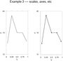

Chapters:
1: Introduction
2: Simple example
3: Invocation
4: Finer Control
5: X-Y Plots
6: Contour Plots
7: Image Plots
8: Examples
9: Gri Commands
10: Programming
11: Environment
12: Emacs Mode
13: History
14: Installation
15: Gri Bugs
16: Test Suite
17: Gri in Press
18: Acknowledgments
19: License
Indices:
Concepts
Commands
Variables
|
4.1: An example
Below is a followup to the previous example, which names the x and the y
axes.
# Fancier version of Example 1
open example1.dat
read columns x y
set x name "Time, hours"
set y name "U, m/s"
draw curve
|
The difference is that the x and y axes are named with a `set'
command. There are many `set' commands, and they are all pretty
simple, e.g. `set x size 15' makes the x-axis be 15 centimeters
long, instead of the default of 10 centimeters. Indeed, you can control
anything you want in gri, e.g. graph size, line width, fonts, etc etc.
Speaking of fonts, the `$\alpha$' type of latex formatting of Greek
letters is supported in a limited way.
Also, Gri handles ISO-Latin-1 encodings as well as the U.S. style.
The example below illustrates a few more `set' commands. This
example is intentionally complicated, being about a good example of the
level of complexity of many plots made by Gri. Read the comments to see
what is being done, and consult the plot as you read the commandfile.

The command-file.
|


{kind=link}